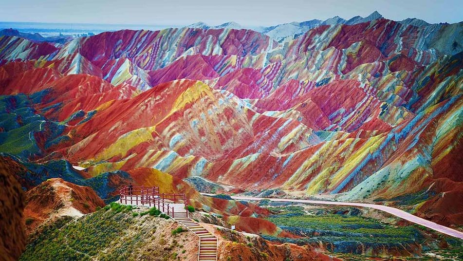

Destinos Destacados
Isla Holbox, Quintana Roo

Situada al norte de la península de Yucatán en el estado de Quintana Roo es famosa por sus actividades tales como el nado con tiburón ballena, y la Isla Pájaros/Isla Morena, refugio donde podrás admirar patos, pelicanos y flamencos además de más de
150 especies de aves. No querrás perderte de la experiencia del Parque Estatal Lagunas de Yalahau que lo tiene todo: sitios arqueológicos, 4 lagunas de una belleza impactante, 203 cenotes, manglares y gran cantidad de flora y fauna. Este parque cuenta
con una riqueza histórica, cultural y natural que no encontraras en ningún otro lado.
Fuente Imagen
Bucerías, Nayarit
Pueblo atractivo y pintoresco, con calles empedradas y casas coloridas, pequeñas tiendas, galerías de arte y un mercado local con trabajos Huicholes de calidad, tampoco te pierdas de la playa limpia y atractiva para disfrutar el día y maravillarse
con las famosas puestas de Sol. Su playa es popular para practicar surf, windsurf, boogieboard y kitesurf.
Fuente Imagen
Tulum, México
Con bellos paisajes y coloridos lugares, Tulum cuenta con atractivos naturales tales como cenotes, lagunas y áreas verdes protegidas, además de ofrecer actividades acuáticas y de aventura. Su franja costera cuenta con playas ideales para nadar, descansar
y disfrutar el día y sus servicios turísticos son de calidad.
Fuente Imagen
Cozumel
Siendo la isla más grande y poblada del Caribe mexicano, goza de tranquilas playas de aguas cristalinas donde las actividades favoritas son bucear y esnorquear. Visita los mejores spas de Cozumel donde te olvidaras del estrés y te sentiras renovado.
Fuente Imagen
San Cristobal de las Casas, México.
Ven y conoce esta ciudad metropolitana considerada como la capital intercultural de Chiapas, ven a disfrutar de su arquitectura y manifestaciones socioculturales. Reconocido como Pueblo Magico, San Cristobal de las Casas te dejara deslumbrado con
su diversidad étnica y tradición colonial.
Fuente Imagen
Mar de Estrellas, Isla Vaadhoo, Maldivas

Puede parecer normal durante el día, pero por la noche, esta playa cobra vida. El brillo en el agua proviene de microbios marinos llamados fitoplancton. La galaxia que se dibuja en la arena es impresionante. Se encuentra a siete horas en auto de
la Ciudad de México y a cuatro horas de la capital potosina.
Fuente Imagen
Casa de Culto Bahai

La Casa de Culto Bahai de Nueva Delhi fue construida en 1986 en forma de flor de loto, con 27 pétalos de mármol rodeados por nueve piscinas y puentes que simbolizan los nueve caminos espirituales de la religión Bahai. el templo está abierto a todo
el mundo, y el único requisito necesario para el acceso es descalzarse y guardar el más absoluto silencio.
Fuente Imagen
Mezquita Sheikh Zayed, Abu Dhabi, Emiratos Árabes Unidos
Célebre por su color blanco puro y la fusión de las diferentes arquitecturas islámicas en un solo templo, este inmenso templo con una superficie de 22.412 m2 y capacidad para más de cuarenta mil fieles, está considerada como la estructura de mármol
más grande jamás construida por el hombre. Abrió sus puertas en el año 2007.
Fuente Imagen
La Gruta del Lago Azul, Brasil

Básicamente, la Gruta del Lago Azul es una cueva cubierta por las aguas de un lago. La particularidad del lugar son sus tonalidades y el paisaje que parece mágico. Situada en Brasil, y para muchos, es una de las cavernas más bellas del mundo.
Fuente Imagen
Parque Geológico Nacional Zhangye Danxia
El Parque geológico nacional Zhangye Danxia o Parque geológico nacional de la Danxia de Zhangye es un parque nacional geológico que se encuentra cerca de la ciudad de Zhangye, en la Provincia de Gansu, al noroeste de la República Popular China. Con
una superficie de 520 km², anteriormente fue parque provincial y zona turística. Se convirtió en parque geológico nacional en noviembre de 2011 . Conocido por sus montañas de colores, fue votado por los medios de comunicación chinos como una de
las más bellas formaciones geológicas del relieve en China
Fuente Imagen